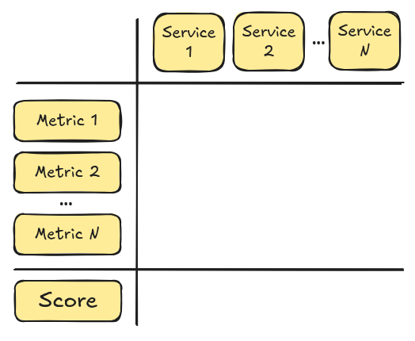
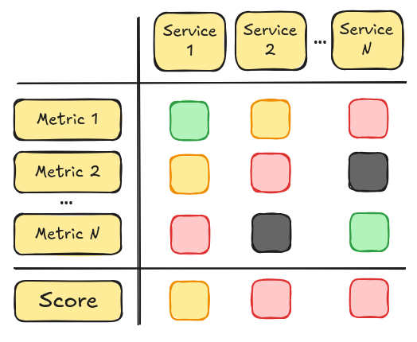
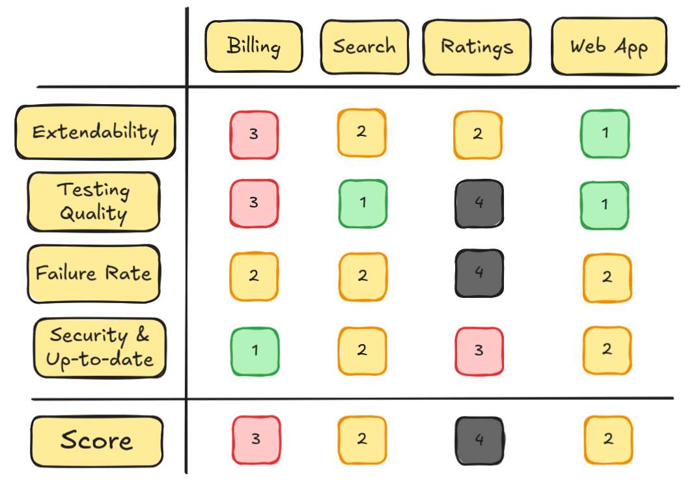
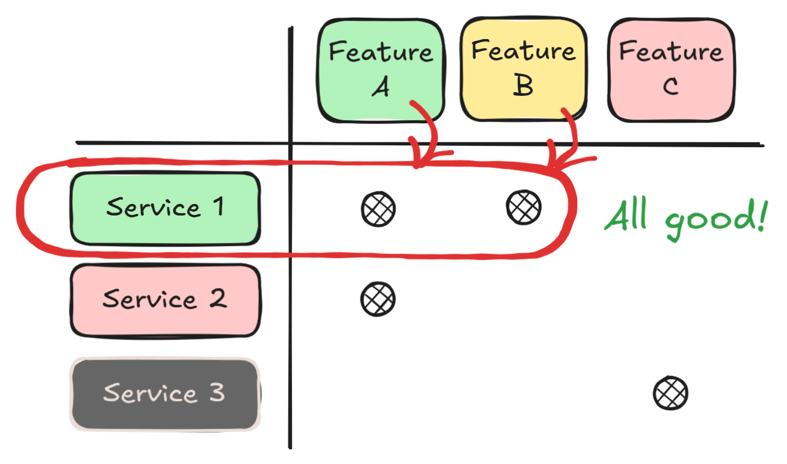
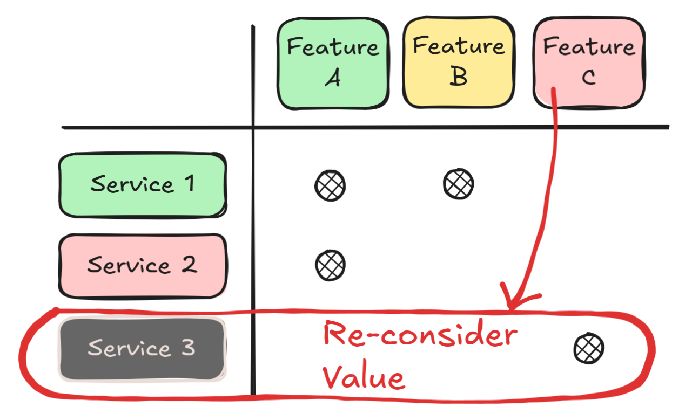
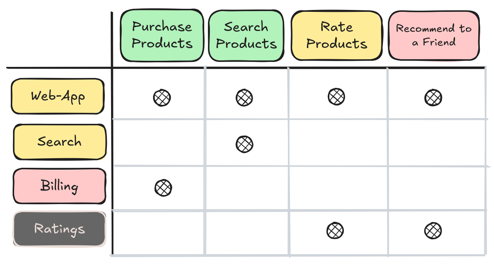

César González Segura
A workshop to help your team navigate legacy software
Posted February 16th 2026
Did you enjoy this article? Follow the conversation on LinkedIn
The importance of properly maintaining legacy software
If you have been around software engineering communities for a while, you will know that dealing with legacy
software is not the preference for most people in our industry.
Working with legacy software usually gets a bad rap. Many engineers associate the word legacy
with incomprehensible codebases, a tangled mess of contributions built over decades.
The reality is that in many cases, legacy software is what keeps businesses afloat. Forgotten services, silently processing
millions of transactions year over year, generating revenue to support their operations.
These isn't the kind of software that attracts most engineers, looking for the newest shiny thing in the scene.
But this software is what keeps our modern world turning.
As time passes, software starts decaying. Maybe the original team who bootstraped the project isn't around anymore,
and institutional knowledge has been lost.
Or maybe its based on ancient (for software engineering standards, anything older than a few years) technology, and nobody
around knows how to work with it anymore.
At the same time, there's little incentive from a business perspective to take legacy software to modern standards. If it keeps working,
why waste resources on it? There's always some new product, some new feature that will have higher priority.
However, the world doesn't stand still and is continuously evolving. And the software backing our modern world has to adapt
to these changes, sometimes very abruptly.
What happens when your organization's legacy software is in a state that can't evolve as required? Business continuity gets in danger.
From paradigm shifts like the desktop to mobile transition, the adoption of cloud native infrastructure or abrupt regulatory changes
as we're experiencing during 2025 and 2026, a lot of things can happen that force you to adapt your legacy software quickly.
In one of my previous teams, we were in a position like this. We were in charge of a sizeable number of services and products,
suffering from all the common ills of legacy software.
We had the task of transforming it all, but with limited time and resources, we wouldn't be able to do it all on time. So the question was:
what should we do first? Why this piece of software and not another one?
As a way to help us get out of the deadlock we were in, I worked with my team on building this workshop that helped us define what has to be fixed,
and what should we do first to ensure we will be able to adapt on time to the business needs.
Introduction to the workshop
The objective of this workshop is helping your team:
- Understand what are the most pressing issues with your legacy services.
- Plan what fixes should be done first to ensure business continuity.
- Share knowledge about legacy systems with the whole team.
The workshop consists of two sessions, taking around two hours each. It's important
that all your team is able to assist to the workshop.
Preparation work for both sessions can take around other 2/3 hours before each session. You can do
the prep work by yourself with help from other team member.
To get the most out of the workshop, it's best to limit the number of attendees to under 10 people.
You want to ensure everybody has enough time and space to contribute.
The purpose of the two sessions are:
- Mapping service health
- Understanding the technical health of the services maintained by your team.
- Outcome → Know in what shape are your services.
- Mapping business / service relevance
- Understand the business relevance of your team's services, and detect pinpoint problems.
- Outcome → Know what services are worth fixing from a business point of view.
By the end of the workshop, you should have a picture of what product features are under threat due to problems
in the legacy services backing them, and which should be solved first.
Setting up an example case study
To illustrate how could the workshop be run with a concrete example, let's introduce an imaginary product and its stack.
Let's assume we have an e-commerce platform, backed by several in-house services and other off-the-shelf or external SaaS
services.
 Service stack in our platform.
Service stack in our platform.
In this workshop, we will only focus on our in-house services, ignoring off-the-shelf and external parts of the
system.
Session #1 - Mapping service health
This workshop session is designed to help the team reflect about the services they take care of,
and evaluate their health. A 2~3 hour slot should suffice for this session, but you will have to
prepare the workshop materials beforehand.
The team will have to describe their services through metrics, helping them measure their
health. These metrics can be both quantitative or qualitative. Depending on your context,
some metrics will make more sense than others.
I recommend preparing the workshop with someone who has been working with these systems for a long time.
They will be able to help you define metrics that the team will find easy to relate to when characterizing
their services.
These metrics carry an associated scoring, mapping their health from best case to worst case. In our workshop,
we used a simple scoring system ranging 1~4, together with a simple semaphoric color code to help us map metrics
in a digital whiteboard:
- 1 (▣) - Ideal → As good as it can be. Our north-star regarding how we want our services to be.
- 2 (▣) - Acceptable → Rough around its edges, but perfectly manageable for a production service.
- 3 (▣) - Problematic → Problems are becoming worrying, and could get worse if maintenance is not expedited.
- 4 (▣) - All hope is lost → A ticking time bomb, we are not ready to react if something unexpected happens.
Once these metrics are ready, we'll set-up a service / health matrix in our digital whiteboard to let the team discuss and
assign a score to each one of our services.
Start by creating a matrix with all the services, and one by one, let the team
decide which score makes more sense for each one of the metrics:

Start with all your services, and the metrics you have chosen.
Then, start a discussion for each of the services and start assigning a score to each metric. As we'll see in the next section,
some metrics will be objectively measurable, while others will raise a more heated debate.
This is by design: we want our team to have a healthy discussion about the services we are managing, and give ourselves some time
to reflect about our work.
Assign a score from 1~4 (green to black, or the color palette of your liking), and finally assign the aggregated score for each of
them. A simple scoring formula that worked well is ceil(avg([scores])).
This formula pulls scores down, ensuring that scores of services with low ranking metrics get pulled low. This helps to bring attention
to services that need it.
Let's add the scores for the metrics, and calculate the score for each metric:

All services have been evaluated and assigned a score.
With these results, we have a bird's-eye view of the technical state of our teams services, split by each metric. With this framework
in mind, we will have to define which metrics can be used to measure the health our system.
In the next section, you'll find some example metrics that you can use in your own workshop. And later on,
we'll review the example case study with a set of metrics that could be good candidates for the workshop.
Quantitative metrics
Quantitative metrics are those that can be measured from objective data. These can be
useful to determine how far are your team's services from the goals set by your organization,
upcoming regulatory requirements, etc.
For each metric, you should define which are the measurable points and/or thresholds to set
the metric's score. For example, consider a metric with four yes/no questions, where "yes" is
positive (you want to fulfill all items).
In this case, having a "yes" answer to all points would score a 1 (▣),
having a "yes" to three out of four would score a 2 (▣), and so on.
Here are some examples you can use as a starting point. Some of these metrics can be answered on a
yes/no basis, others require gathering actual numbers:
-
Obsevability
- Are our systems observable from the outside?
- Are there alarms in place to notify the team in case there is a production failure?
- Is the team able to understand the current state of the system by checking logs and traces?
- Are performance measurements available for our systems?
-
Security
- Do our systems use libraries or frameworks with known security vulnerabilities?
- Are we running security scanning processes on our systems?
- If so, is the team actively patching found security vulnerabilities?
- Does the team follow security best practices? (masking PII data in logs, properly storing sensitive data and secrets, etc)
-
Up-to-dateness:
- Are any of our systems using frameworks or libraries out of their maintenance window?
- Are any systems using frameworks that could complicate updating to modern versions if needed? (ex. NET Framework, PHP 5...)
- Do our systems comply with all applicable regulations, in all applicable jurisdictions?
-
Scalability
- Is the team aware of how do our services perform under load?
- Does the architecture of the systems allow to scale them up when required?
- Can the team scale them autonomously, or do we need support or permission from other teams?
- Are there auto-scaling measures in place?
- Do we perform regular load testing on our services?
-
Failure Rate
- How often does the service suffer from critical bugs?
- Does the service go down? If so, how long does its recovery take?
- Is the service part of the critical path? Can the business continue operating during downtime?
Qualitative metrics
Qualitative metrics work great to help your team assess how do they "feel" when working with
their systems. Discussing metrics without factual data to back them might seem counterproductive,
but in some cases trying to express all problems with hard numbers might complicate the debate.
The main point when discussing through these metrics is ensuring there's a healthy debate during the
workshop, and come to a common understanding of how does it feel to work with these systems.
Some qualitative metrics you can use are:
-
Extendability
- How easy is it to add new features to our service?
- Are we held back by its architecture and/or design?
- Do we avoid extending the service beyond surgical changes due to accumulated tech debt?
-
Testing quality
- Are the tests backing our service easy to read and understand?
- Do we trust the results of our tests?
- Is it easy to create new tests?
- Does our test codebase break easily when adding new features?
We could find an objective way of measuring these metrics with hard data. But in many
cases the debate created around these topics is much more valuable to understand the general
"vibe" around working with these services, than hard numbers by themselves.
For example, you could assess testing quality quantitatively by measuring the code base's coverage,
the number of flaky tests or the time required to execute a full test suite.
However, if the architecture supporting these tests makes creating new tests or extending existing
tests a chore, the team will have an easier time expressing this pain point from a feelings
point of view. Even though from a numbers perspective, everything seems to be okay.
Session #1 - example case study
Let's go back to our example case study, and define which metrics are most relevant for our services, and how
to measure them.
Our service matrix will consist of the four key services our team manages (excluding off-the-shelf
components). To measure their health, we will use four metrics, two qualitative and two quantitative:
-
Extendability: How easy is it to extend the service with new features?
- 1 (▣) → Extending the service with new functionality is seamless. New features and improvements take minimal time.
- 2 (▣) → Adding new functionalities can get cumbersome without refactoring first.
- 3 (▣) → The codebase has grown without regard to its architecture, and adding new features is time consuming and a potential risk.
- 4 (▣) → Adding new features is very time consuming, and requires extensive prior clean up through refactoring.
-
Testing Quality: How good are the tests supporting development of the service?
- 1 (▣) → Tests are well maintained, comprehensive and robust. Includes functional and non-functional testing, stress tests, etc...
- 2 (▣) → There is decent test coverage, but their design makes them prone to breaking.
- 3 (▣) → There are some tests, but not coverage isn't good enough to allow changes without risk.
- 4 (▣) → There are no tests, and adding new tests would take a lot of effort at this point.
-
Failure Rate: How often does the system fail? How long does it take to recover?
- 1 (▣) → Less than 5 critical failures in a one year period. Upon failure, full recovery took less than 10 minutes.
- 2 (▣) → ~10 critical failures YoY. When these happened, full recovery took less than 10 minutes.
- 3 (▣) → ~10 critical failures YoY. When these happened, full recovery took more than 10 minutes.
- 4 (▣) → ~4 critical failures / week. When these happened, full recovery took more than 10 minutes.
-
Security & Up-to-Date: Are its dependencies (including frameworks) up to date? Have security vulnerabilities been detected?
- 1 (▣) → Zero critical security vulnerabilities. Dependencies use latest stable versions.
- 2 (▣) → Zero critical security vulnerabilities. Dependencies use older but still supported stable versions.
- 3 (▣) → Active critical security vulnerabilities present. Dependencies use older but still supported stable versions.
- 4 (▣) → Active critical security vulnerabilities present. Dependencies use deprecated versions.
Now that we have a set of metrics to measure the health of our teams services, we can build the service / metric health matrix
and start filling in the score for each metric.
 Empty service health map.
Empty service health map.
If we have been diligent keeping track of our work in the available tracking tools, deciding the score for the quantitative metrics
should be straightforward.
We can leverage logs, performance metrics, reports from the package manager, security vulnerability analysis tools and post-mortem documentation
from previous failures and incidents.
On the other hand, extendability and testing quality metrics will involve a deeper discussion between the developers in the team. How was the
experience building the latest features in each service? Was it easy, or did we try to avoid it at all costs?

Completed service health map (numerical score added for clarity).
After some healthy discussion in the team, metrics for all services have been evaluated and their scores set. The final score has been calculated
following the formula introduced earlier.
Now, we have a birds-eye level picture of the health of our services. From what we've gathered, our web-app and search service are in a good
enough shape, at an acceptable point for a production app.
However, the billing and ratings service are in trouble. Particularly the ratings service has strong ongoing issues, with a very high failure rate, lurking
security issues and no useful test base to help us overcome these problems.
Should we jump in and plan the work to get these services into shape into next iterations? First, we should ask ourselves: is it worth it?
Session #2 prep - Considering bussiness importance
If we only pursued engineering excellence, and were provided with unlimited budget, it would be great to fix all the problems we've found,
and leave them in perfect condition.
In real world software engineering, with limited time, capacity and rapidly switching objectives, we have to compromise.
Before even starting to think about how to fix the issues we've found, first we had to understand if it made sense from a business perspective.
To do so, we scheduled a short follow-up session with product and business specialists from our team, and listed the product features that are
backed by our team's services.
Then, we sorted all features by business importance, using a numerical scale as we did with the technical services.
Ranging from 1 (▣), meaning a feature that's very important for the business, to
3 (▣), meaning it's a nice to have but not really a must have for business continuity.
To support this classification, we used a variety of metrics our product experts had in hand. Some of them were:
- Usage numbers
- How many users do actively use the feature? (DAU / MAU)
- Are the users making use of the feature important for the business? (paying customers, important contracts...)
- Revenue Generation
- What is the impact of the feature in terms of revenue, regardless of usage?
- What would happen to revenue if we stopped supporting it?
- Compliance & Strategical Opportunity
- Is this feature a regulatory requirement in important markets?
- Does supporting it keep key users from leaving the platform?
- Is it a requirement for an important contract with a major customer?
With the list of features in hand, sorted by their business relevance, we can prepare the next workshop session: matching each
product feature with its backing service.
Session #2 - Evaluating technical / business health
It's time for the second and final session of the workshop. It will take around 1~2 hours to complete.
In this session, we will complete link the business relevance of each product feature to services supporting them.
To build this mapping, the steps we follow are:
- Build a matrix, with all services as rows, and product features as columns.
-
Sort both services and features with descending health and relevance (top left corner for best, bottom right corner for worst).
- Use the color key to help visualize health and relevance at a glance.
-
Place a pin in each cell where a product feature is backed by a service.
- In the following example, Feature A is backed by Services 1 and 2.
The resulting matrix will look like this:
 Mapping product features against services.
Mapping product features against services.
With this information at our disposal, its time to start taking decisions on what's worth fixing and what's not. We'll focus
on looking for features that are:
- In good shape.
- Ticking time bombs.
- Costing the business more money than they're worth it.
First, we have the best case scenario: features that are very relevant for the business, which are supported by
services that are in good shape.

No need to worry about these.
This is great! These features are the ones that make our product relevant, and the services backing them are
in good condition.
We can safely ignore these, and just keep up the good work. If there are any new features, unexpected regulatory changes
or required updates, we will be able to handle them without problems.
Next, we must focus on the danger zone. These services are a ticking bomb in our hands, and we should be looking
forward to fixing the issues we've detected as soon as possible.
 We could be in trouble if something goes wrong with these.
We could be in trouble if something goes wrong with these.
These are product features that are very important for the business, but are backed by services that are in bad health.
For example, let's imagine a critical business feature that hasn't changed at all in years. Even if it is in bad shape from a
technical point of view, why should we worry?
The big issue here is that we are in a bad position if we ever see ourselves in the need of applying changes quickly.
What happens if there are regulatory changes to be applied in short notice? Or if signing a new life-changing contract depends
on updating this feature, and we can't commit to it?
The key takeaway here is, invest enough resources in keeping your key services in good condition, to avoid a meltdown when it is too late.
In the last group, we have those that should open a conversation around: is keeping support for these features even worth it?

Why are we wasting resources on this?
These are features that are seldom used, not really relevant for the business, and are backed by services that are in bad shape.
Seeing your team get bogged down by taking care of large numbers of bugs or incidents related to this kind of features might sound familiar.
In these cases, it might be worth to raise a discussion around the feasibility of directly stop supporting them.
Depending on the feature, there could be workarounds to them and users can be redirected to do the same job in more steps or in a different way.
Other features might be impossible to replace by workarounds.
Sometimes, even if seldom used, these are mandatory in order to fulfil important contracts.
Every case is different, but this signals a discussion is worth raising.
The key takeway to raise is: what is costing the business more money? Keeping these features alive, or the value generated by them?
Session #2 - Example case study
After reviewing how to fill the technical / business health map, and how to interpret its results, let's review
the example case study and see what we find.
Let's assume there are four features backed by the services we enumerated in the first session:
- Purchase → Web-app + Billing
- Search → Web-app + Search
- Rate → Web-app + Ratings
- Recommend to a Friend → Web-app + Ratings

Completed service health map (numerical score added for clarity).
The purchase products and search products are the core features of our e-commerce, and the business can't operate without
them.
Rating products is a nice to have feature, many users make use of it and it helps customers navigate the available listings in the platform.
Last, recommending products to a friend was an experimental feature and isn't almost at all, besides for a vocal minority of users.
What results can we extract from the map?
- Purchase Products
- We have a ticking time bomb in our hands.
- This is the core feature of our business.
- However, it's backed by the billing service which has severe issues.
- Search Products
- Nothing to worry about!
- Backed by services in good health.
- Core business feature with high value.
- Rate Products
- It's a nice to have feature, but not a business core feature.
- At the same time, it's backed by a service in terrible state.
- Recommend Product to a Friend
- Has very little business value.
- It's a major source of technical headaches for the team.
Now we know where we stand, the problems we have in our hands and which should be attended more urgently.
Tracing an action plan
With these results, we have pinpoint which are the critical points across our services that should be fixed
to ensure business continuity without ugly surprises.
The goal with these workshops is being able to create the plan to get out of this situation. The data we've
collected tells us where should we start, but not what to do.
The steps you will have to take as a team to fix the problems in your services and product features will be vary greatly
depending on the kind of problems you have at hand.
To illustrate through an example, we can take the conclusions from the example case study. Let's begin
with the purchasing products feature.
Going back to the results of the first workshop (service health map), we can trace a plan to ensure the service backing
this feature, the billing service, has the expected quality.
The service has severe extendability and test coverage issues, plus security problems. If we want to ensure business continuity,
a good starting point could be:
- Improving its test coverage to avoid regressions when adding new features or fixing bugs.
- Using the newly improved test coverage, refactor the codebase to facilitate its extendability.
- Resolve the ongoing security issues, before we get a severe incident in our hands.
We can plan these improvements as part of our iterations, leaving some headroom so we can advance steadily. Doing work that doesn't
bring nothing new to the table might raise some eyebrows, but that's why we have the data to back these decisions.
The message is that we don't want to improve our software for the sake of doing so: we want to ensure business continuity.
Regarding the other two pain-points, the rate products and recommend product to a friend features, we can apply the
same kind of principles as explained in the previous section.
The ratings service has abysmal quality and a very high failure rate. Either we improve it, or we discard the features that are not
that relevant to the business. The key resides in evaluating the tradeoffs from both options.
Reflecting on the results
In our particular case, this workshop really helped us understand in what situation we were at and put us in the right mindset to
start working on our ongoing issues.
At times where there are too many problems on the table, having data neatly laid out helps a lot with creating a clean mental
model and making better decisions.
Since this was the first run of the workshop, there were many points that were refined as we progressed. What I describe here is the
refined result of what we went through.
After sharing the workshop with other teams within our organization, they tried it out and had positive results. Adapting it to their
needs was key.
If you are going through a similar situation in your organization, I hope this serves as inspiration to attempt this workshop with your team
and get the ball rolling.
And of course, if you try it out and do anything differently, or have any ideas on how to improve it, I would love to hear them.
If you've made it this far, thank you so much for reading!
If you have any comments, suggestions or want to discuss any of the topics in this article,
feel free to reach out through any of the channels in the top of the page.